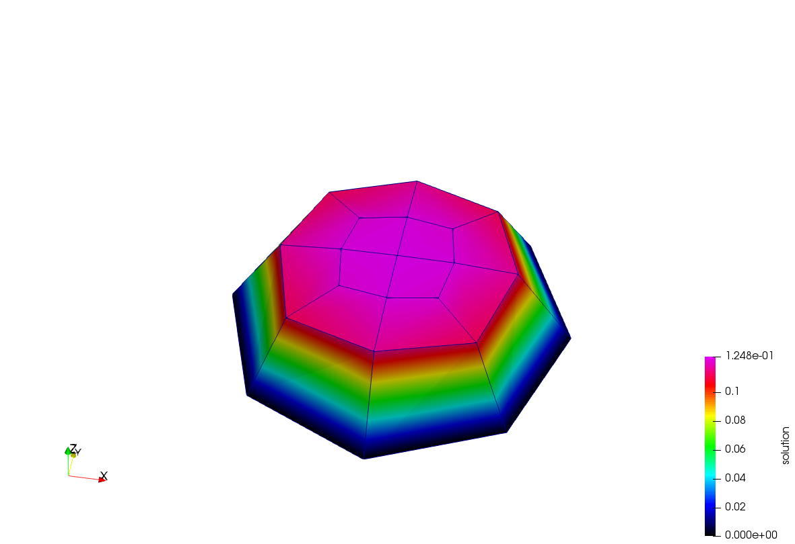
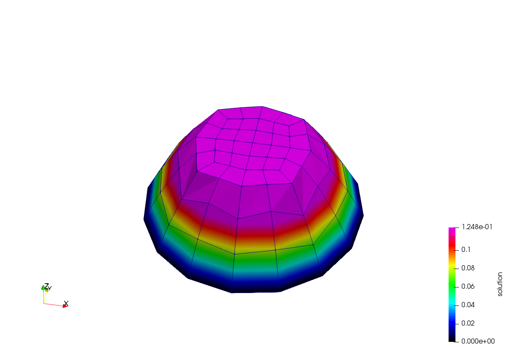
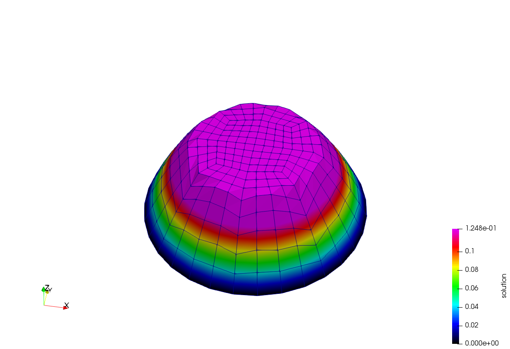
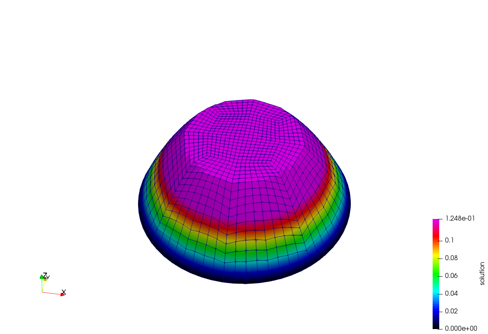
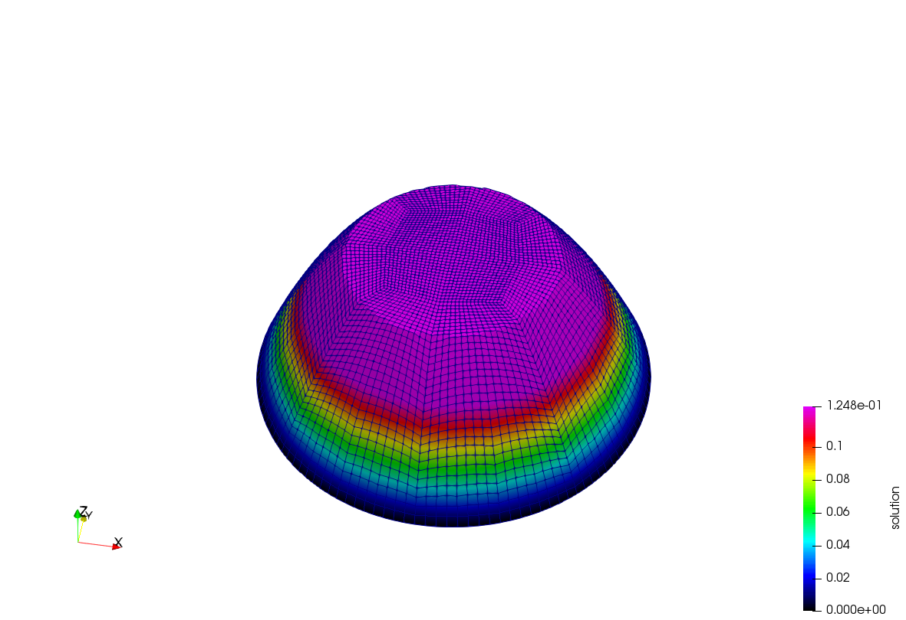
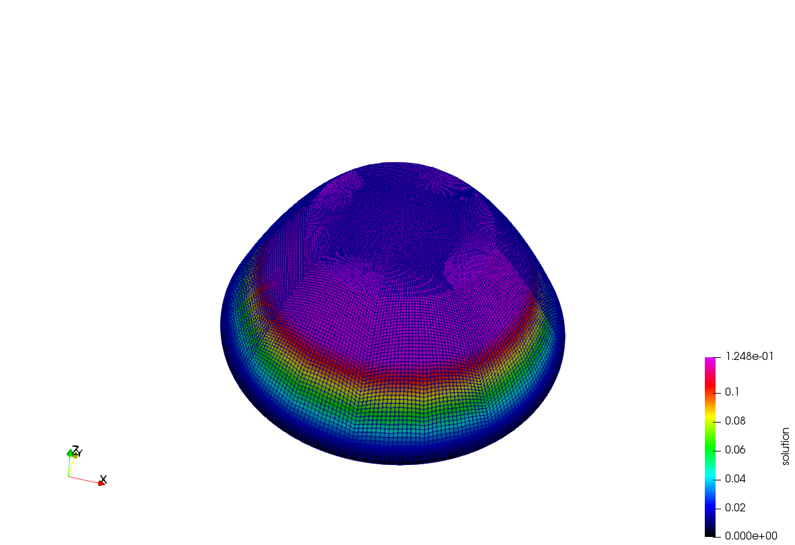
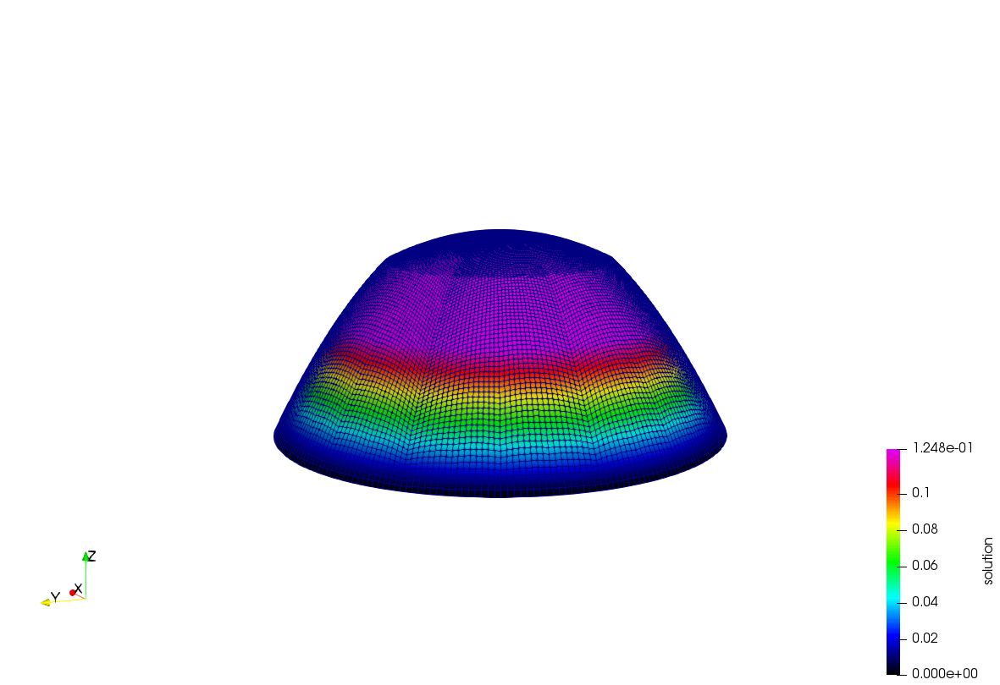
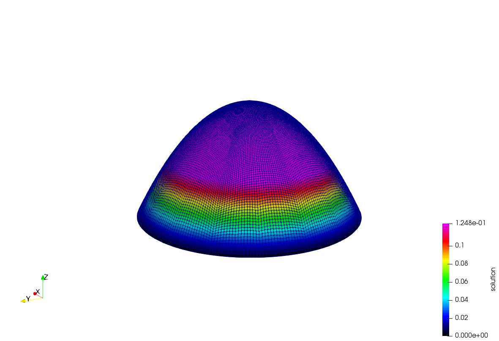
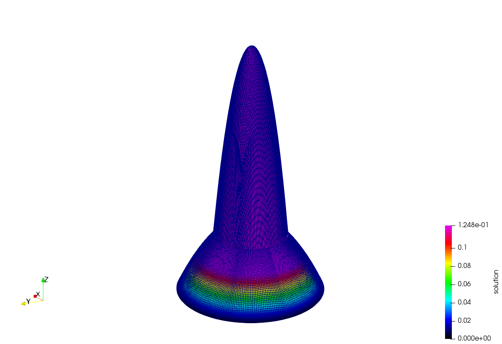

2019.09.25 Step-5 StudyThe step-5 is mainly talking about how deal.ii is doing loop for simulations with multiple mesh refinements.
We can run the default code and derive the results.





Note: the pictures are generated in ParaView5.5.0. There is a trick to display the 2D results in a kind of 3D surface style. The filter needs to be used is called “Warp By Scalar”.
Nevertheless, for 3D results, the “Warp By Scalar” may not be extremely useful. In this situation, we need to use “Warp By Vector” filter. (For more details, please check the note of step-4.)
The computaion log is shown as follows,
Cycle 0:
Number of active cells: 20
Total number of cells: 20
Number of degrees of freedom: 25
13 CG iterations needed to obtain convergence.
Cycle 1:
Number of active cells: 80
Total number of cells: 100
Number of degrees of freedom: 89
17 CG iterations needed to obtain convergence.
Cycle 2:
Number of active cells: 320
Total number of cells: 420
Number of degrees of freedom: 337
29 CG iterations needed to obtain convergence.
Cycle 3:
Number of active cells: 1280
Total number of cells: 1700
Number of degrees of freedom: 1313
51 CG iterations needed to obtain convergence.
Cycle 4:
Number of active cells: 5120
Total number of cells: 6820
Number of degrees of freedom: 5185
94 CG iterations needed to obtain convergence.
Cycle 5:
Number of active cells: 20480
Total number of cells: 27300
Number of degrees of freedom: 20609
180 CG iterations needed to obtain convergence.
Now I will go through some the possible extensions thought out by myself.
Change the output file format to vtk.
1
2
3
4
5
6
7
8
9
10
11
12
13
14
15
16
17
18
19template <int dim>
void Step5<dim>::output_results(const unsigned int cycle) const
{
DataOut<dim> data_out;
data_out.attach_dof_handler(dof_handler);
data_out.add_data_vector(solution, "solution");
data_out.build_patches();
// DataOutBase::EpsFlags eps_flags;
// eps_flags.z_scaling = 4.;
// eps_flags.azimut_angle = 40.;
// eps_flags.turn_angle = 10.;
// data_out.set_flags(eps_flags);
// vtk files names, added by zzd
std::ofstream output("solution-" + std::to_string(cycle) + ".vtk");
// std::ofstream output("solution-" + std::to_string(cycle) + ".eps");
// data_out.write_eps(output);
data_out.write_vtk(output); // vtk output, added by zzd
}Change precondition of the conjugate gradient algorithm
1
2
3
4
5
6
7
8
9
10
11
12
13
14
15template <int dim>
void Step5<dim>::solve()
{
template <int dim>
void Step5<dim>::solve()
{
SolverControl solver_control(1000, 1e-12);
SolverCG<> solver(solver_control);
PreconditionSSOR<> preconditioner;
preconditioner.initialize(system_matrix, 1.2);
solver.solve(system_matrix, solution, system_rhs, PreconditionIdentity()); // added by zzd
// solver.solve(system_matrix, solution, system_rhs, preconditioner);
std::cout << " " << solver_control.last_step()
<< " CG iterations needed to obtain convergence." << std::endl;
}
A preconditioned conjugate gradient (CG) algorithm has been used in step-5.
Previously, the PreconditionIdentity has been used, which is exactly same as no precondition for the CG algorithm.
So Now we will try to change back to the PreconditionIdentity to see how is the results.

The computation log is shown as follows,
Cycle 0:
Number of active cells: 20
Total number of cells: 20
Number of degrees of freedom: 25
5 CG iterations needed to obtain convergence.
Cycle 1:
Number of active cells: 80
Total number of cells: 100
Number of degrees of freedom: 89
19 CG iterations needed to obtain convergence.
Cycle 2:
Number of active cells: 320
Total number of cells: 420
Number of degrees of freedom: 337
72 CG iterations needed to obtain convergence.
Cycle 3:
Number of active cells: 1280
Total number of cells: 1700
Number of degrees of freedom: 1313
164 CG iterations needed to obtain convergence.
Cycle 4:
Number of active cells: 5120
Total number of cells: 6820
Number of degrees of freedom: 5185
366 CG iterations needed to obtain convergence.
Cycle 5:
Number of active cells: 20480
Total number of cells: 27300
Number of degrees of freedom: 20609
778 CG iterations needed to obtain convergence.
From the comparison of the the above info. to that of the situation with preconditioner, we can find that without preconditioner, the iterations taken to obtain convergence become much larger (eg. 778 vs. 180 iterations). So this implies the preconditioner should be very important.
- [Provided in deal.ii official tutorial] Tips about higher efficent programming:
a. Using “try & check” assertions is helpful for finding bugs in codes.
b. The assertions should only be used in debug mode not optimized mode. The switch is in this way，
make debug
make release
The following is an example. We added Assert(dim==3, ExcInternalError()) in the “coefficient” function,
1 | // head file for exceptions in deal.ii, added by zzd |
And after we run the program, the error as following appeared,
An error occurred in line <72> of file </home/wonderfulzzd/eclipse-wp/std_deal.ii/examples/step-5/step-5.cc> in function
double coefficient(const dealii::Point
The violated condition was:
dim == 3
Additional information:
This exception – which is used in many places in the library – usually indicates that some condition which the author of the code thought must be satisfied at a certain point in an algorithm, is not fulfilled. An example would be that the first part of an algorithm sorts elements of an array in ascending order, and a second part of the algorithm later encounters an element that is not larger than the previous one.
There is usually not very much you can do if you encounter such an exception since it indicates an error in deal.II, not in your own program. Try to come up with the smallest possible program that still demonstrates the error and contact the deal.II mailing lists with it to obtain help.
Stacktrace:
#0 /home/wonderfulzzd/eclipse-wp/std_deal.ii/examples/step-5/step-5: double coefficient<2>(dealii::Point<2, double> const&)
#1 /home/wonderfulzzd/eclipse-wp/std_deal.ii/examples/step-5/step-5: Step5<2>::assemble_system()
#2 /home/wonderfulzzd/eclipse-wp/std_deal.ii/examples/step-5/step-5: Step5<2>::run()
#3 /home/wonderfulzzd/eclipse-wp/std_deal.ii/examples/step-5/step-5: main
However, when we use “make release” to build the program and run it, there is no such error notification anymore even we do not delete the piece of code: “Assert(dim==3, ExcInternalError())”.
- Change the nonconstant coefficients
Change the nonconstant coefficients from 20 to 2 with in the p.square<0.5*0.5 range.
1 | template <int dim> |
The generated results is shown in the below picture,

We can see that the top surface is not flatten anymore.
When the coefficient is changed to 1,

We can see the geometry becomes very smooth. The top surface is no long distinguishable.
When the coefficient is changed to 0.1,

We can see the top surface is larger deformed than the rest of the geometry. A very sharp hat has been generated.
Future work:
The FEM information flow control should recieve more attention, such as how exactly the boundary_values are applied on the final linear equations system.
The “friend” and “virtual” in C++ is still not crystal clear and should be further studied.
The official tutorial document is as follows,
https://www.dealii.org/current/doxygen/deal.II/step_5.html